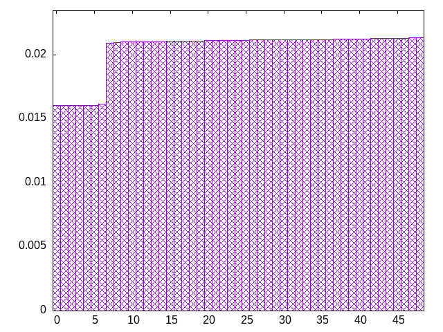
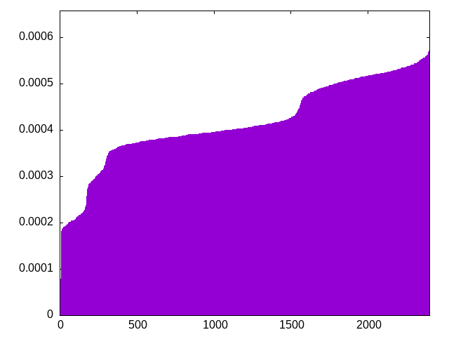
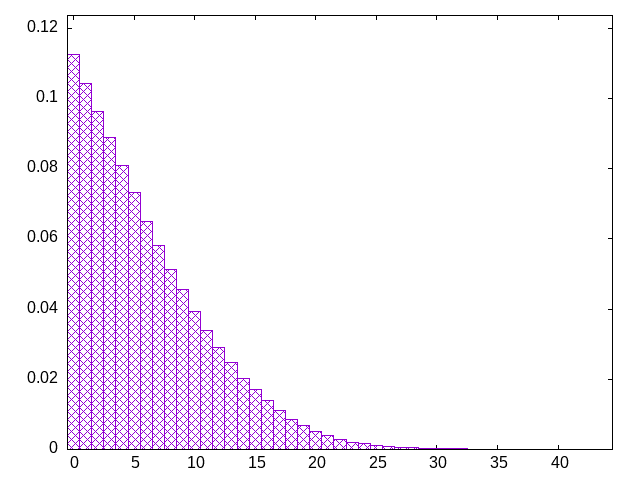

choose pieces from a bag, refilling when empty
28-piece bag (four of each piece)
ozsztioljliosltjjztssoztjiilltzoolsjtljtiztsloosjjizizisjtlzsztsooiizjtlojtoijslizslziltiljjosojlzizssittloojztssitszzsltstolotijijiljzozjloisjoosojjiitjltizstlzlolztszozlsitstosjjzltliijztoiljsozlotollzooisjztsilzjjisiztjtsszztllilzjtsojsjtotszjioiolisjtoltozzjsioijllszitojziltsiloossttzlossljjtiijtzzjilozliisttztzioolijojjoszlssltjzzioltoslosjijsstjzzzittijlolossztsljiosltizjoiltljotzjzijllizsizozzljjtojilittosotssltlozljoizisiotsjztjojilzststlzijjsjioszlozolizilttstjosjloolittozzosztijtjisiljzssltjlizjszsotozsjlolizijtstliostzsjooijoisttlllljiitzzjozssitllztzojozstlioilijjzsjotsjljiztsizlstzootjoslsztjiilollzisjsliioitjsotlzzttzjoosjsiszlojoioiittzojszsjllltztjjjlistjtstzzlsoliilzozjtiosoojllzszzoszlisioslttjoititjjolsjlzoztojttlijjslsizioisztloljziziszlttiizotslotjosjjsslozojosttiziljzioizjsjstlltootsljzijsojijtlztliloztiszsoiloljlzztilsszzoiottjtjsisjsloiltlltsizsjzttzsizojjoiojizzzssiltjolliojtsztlstjojoiljjliojzitzlzssotstiozoisjltjstztszlzjljozisiljiitsotoloizlzotisjsziojjtjoll
bagginess: 0.0128
bagginess6: 0.2205
distribution1_maxgap: 1.000000000001e-06
distribution2_maxgap: 0.004758004758004759
distribution3_maxgap: 0.0010020020040040082
distribution4_maxgap: 8.700026100078301e-05
diversity: 4.9
entropy: 11.553
evenness_diff: 5.615
evenness_same: 4.008
maxdrought: 40.7
maxflood: 5
peakdrought: 0.0
repchance: 0.1123
seq4_coverage: 1.0000
seq4_follow: 6.416
distribution2_graph:

distribution4_graph:

drought_graph:

similarity: (lower is more similar)
| 0.007 | bag3 |
| 0.009 | shift14 |
| 0.011 | balanced9 |
| 0.012 | shift21 |
| 0.021 | deepbag_window10 |
| 0.023 | shift10_5 |
| 0.026 | deepbag_window7 |
| 0.035 | balanced_long_mul_pure |
| 0.049 | seamless_bag3_pure |
| 0.053 | balanced_long_add_pure |
| 0.065 | deepbag_fixed10 |
| 0.071 | wet3 |
| 0.097 | wet2_size100 |
| 0.109 | bag2 |
| 0.109 | shift7 |
| 0.114 | fullrandom |
| 0.115 | seamless_bag2_pure |
| 0.124 | nes_pure |
| 0.146 | nes |
| 0.166 | balanced7 |
| 0.215 | fullrandom_pure |
| 0.268 | weight_lin_pure |
| 0.277 | deepbag_window4 |
| 0.280 | balanced5 |
| 0.285 | weight2 |
| 0.368 | wet3_size12 |
| 0.377 | deepbag_fixed7 |
| 0.417 | shirts_g3w7 |
| 0.448 | seamless_deep_pure |
| 0.479 | wet2 |
| 0.492 | weight |
| 0.569 | shirts_smooth_c10 |
| 0.607 | tgm_pure |
| 0.618 | tgm |
| 0.678 | shirts_smooth_c12 |
| 0.690 | bag_pure |
| 0.693 | bag |
| 0.720 | shift3_5 |
| 0.786 | deepbag_fixed4 |
| 0.823 | tgm_tap |
| 0.823 | tgm_tap_pure |
| 0.825 | shirts_smooth_c8 |
| 0.944 | ti |
| 0.950 | shirts_smooth_c14 |
| 0.952 | weight_exp |
| 0.962 | shirts_g1w3 |
| 0.966 | shirts_g1w7 |
| 1.052 | wet_pure |
| 1.063 | weight_exp_pure |
| 1.087 | wet |
| 1.278 | seamless_bag_pure |
| 1.377 | shirts |
| 1.578 | shirts_smooth |
| 2.223 | repeat_recent_pure |
| 2.734 | shift1_75 |
| 4.189 | repeat_last_pure |
| 8.924 | flatbag |
| 8.924 | flatbag_pure |